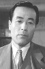

Also known as:雨月物語 (original title)
Country:Japan, 96 minutes
Spoken languages:
Genres:Fantasy, Drama, Mystery
Director(s):Kenji Mizoguchi
Writer(s):Yoshikata Yoda
Video Codec:Unknown
Number: 2237


Certification:
Storyline:
In 16th century Japan, peasants Genjuro and Tobei sell their earthenware pots to a group of soldiers in a nearby village, in defiance of a local sage's warning against seeking to profit from warfare. Genjuro's pursuit of both riches and the mysterious Lady Wakasa, as well as Tobei's desire to become a samurai, run the risk of destroying both themselves and their wives, Miyagi and Ohama.
Cast: 

Medium: Original DVD,
Loaned: No
Aspect ratio: Unknown